Centro Interdisciplinar de Novas Tecnologias na Educação
Programa de Pós-Graduação em Informática na Educação
Delinéia
Grandes modelos de linguagem e análise de coocorrência de palavras para o delineamento do escopo de projetos de pesquisa no ensino superior
Orientador Prof. Dr. Eliseo Berni Reategui
Defesa de tese, Porto Alegre, 8 de outubro de 2026
Delinear o escopo de um projeto exige equilibrar sensibilidade e especificidade na busca bibliográfica
Busca sensível
recupera muito além do projeto
Busca específica
deixa de fora parte do que importa
Escopo delineado
aproxima a busca do projeto
O volume da literatura científica torna a busca manual exaustiva e sujeita a vieses
Volume crescente
a literatura cresce em ritmo acelerado
Busca manual
exaustiva e sujeita a vieses de seleção
Diante da mesma questão, pessoas diferentes escolhem termos diferentes e recuperam documentos diferentes
Escolher e combinar termos exige um conhecimento de domínio que o estudante ainda está construindo
Os protocolos para construir estratégias de busca foram desenhados para revisores experientes
O ART/REV, pensado para iniciantes, trabalha com citações e deixa de fora o conteúdo semântico
Delinear o escopo é um desafio cognitivo e afetivo

O estudante enfrenta sobrecarga informacional e precisa converter intuições difusas em recortes metodológicos coerentes.
Busca em linguagem natural
Consultas sem operadores lógicos nem truncagem, registradas no estudo final.
Equação madura, segurança baixa
Quem escreveu esta equação se avaliou como inseguro.
O acesso a motores de busca convive com a insegurança na hora de orquestrar a busca sob ambiguidade.
De que maneira a avaliação automatizada das definições preliminares de um projeto afeta a autoeficácia dos estudantes no delineamento de suas propostas de investigação?
Analisar de que maneira a avaliação automatizada das definições preliminares de um projeto afeta a autoeficácia dos estudantes no delineamento de suas propostas de investigação.
- a Propor um modelo computacional que integre análise de coocorrência de palavras-chave e IA generativa para a geração de feedback personalizado no delineamento do escopo de projetos de pesquisa no ensino superior; artefato
- b implementar o sistema de avaliação automatizada das definições de um projeto de pesquisa, com base no modelo proposto, como artefato tecnológico educacional; artefato
- c avaliar os efeitos do feedback gerado pelo sistema implementado sobre a autoeficácia dos estudantes, operacionalizada pela variação no nível de segurança declarado antes e após a leitura do relatório e sobre a precisão das palavras-chave adotadas no delineamento do escopo da pesquisa; estudo final
- d comparar o desempenho do sistema a partir de metadados de natureza distinta (palavras-chave de autor no estudo preliminar com conceitos hierárquicos) para identificar diferenças na qualidade das sugestões geradas e nas percepções dos estudantes sobre sua relevância para o escopo declarado; comparação entre estudos
- e analisar o desenvolvimento das habilidades dos estudantes na etapa de formulação de foco, verificando a capacidade de monitoramento e a reformulação iterativa de palavras-chave estimuladas pelos suportes visuais e feedbacks formativos do sistema proposto. análise qualitativa
Nove termos, da macroestrutura à unidade de análise, contextualizados na ontologia do OpenAlex
A pesquisa foi dividida em quatro fases
Levantamento teórico e mapeamento funcional
Revisão de modelos teóricos e planejamento de funcionalidades da ferramenta
Desenvolvimento da ferramenta
Construção de uma ferramenta que integra visualização e feedback de IA
Aplicação educacional
Teste da ferramenta com estudantes em ambientes educacionais
Análise de dados
Avaliação do impacto da ferramenta usando dados coletados
A formulação de um escopo rigoroso requer andaimes instrucionais capazes de estruturar a tolerância à ambiguidade, a tomada de decisão e a autonomia investigativa do pesquisador iniciante.
Considerações sobre o capítulo, seção 2.7
Quatro modelos explicam as exigências cognitivas e afetivas do delineamento

Escrita
Flower; Hayes, 1981
Delinear o escopo corresponde ao planejamento, que reúne gerar ideias, organizá-las e definir metas.


Comportamento informacional
Wilson, 1999b; 2000
No modelo de 2000, crenças de autoeficácia modulam a ativação do comportamento de busca.

Busca exploratória
Hoeber; Shukla, 2022
A formulação de foco acontece sob uma incerteza que oscila antes de se estabilizar.
Autoeficácia em pesquisa
Bandura, 1997
Explica por que alguns estudantes persistem e toleram a incerteza, enquanto outros recuam.
A integração tecnológica viabiliza a mediação pedagógica do delineamento
2.3
LLMs para extração de informações
Extraem informações e selecionam palavras-chave em domínios diversos, com risco de alucinação.
Han et al., 2024; Xu et al., 2024; Lei et al., 2024
2.4
Interação humano-IA na educação
Os efeitos educacionais dependem do planejamento pedagógico e de o estudante manter o controle interpretativo.
Wang; Jing; Shen, 2025; Atchley et al., 2024; Wu et al., 2025
2.5
Análise de coocorrência de palavras
Mapeia a estrutura temática de um campo e torna visíveis as lacunas da literatura.
Callon et al., 1983; He, 1999; Oliveira et al., 2019
2.6
Aceitação e usabilidade
TAM3 e UTAUT pesam o ganho esperado contra o esforço de uso. No TAM3, a autoeficácia antecede a facilidade de uso percebida.
Venkatesh et al., 2003; Venkatesh; Bala, 2008
Para cada 280 estudos que usam a análise de coocorrência, apenas um trata do seu ensino
Registros recuperados na Web of Science e na Scopus, em escala real
Os 13 estudos incluídos
Um único estudo põe a coocorrência no centro da formação. Nos outros doze, ela está ausente ou é apenas mencionada. Uma revisão vazia (empty review).
Seleção segundo o PRISMA 2020
− 142 duplicatas
− 310 fora dos critérios
− 1 editorial
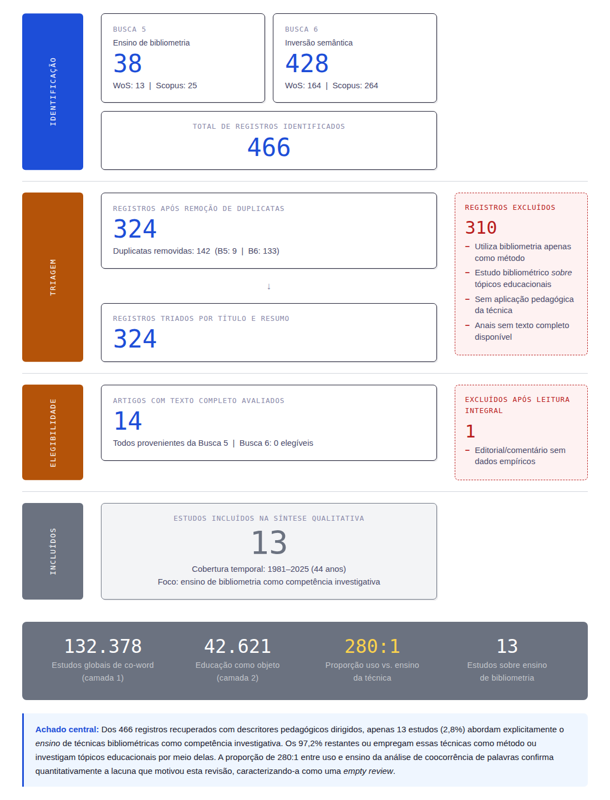
Figura 6, clique para ampliar
Os sistemas existentes avançam da exploração da literatura até o desenho da pesquisa
Tecnologias de orientação bibliométrica e inteligência artificial generativa
Fonte: elaborado pelo autor com base no capítulo 4 da tese. Logotipos das respectivas organizações. Figuras dos protótipos reproduzidas dos artigos originais para fins acadêmicos.
A pesquisa avançou em três ciclos, da mediação do pesquisador à autonomia do estudante
Ciclo 1 · 2024
Primeiro estudo preliminar
mediação manual e síncrona
Ciclo 2 · 2024
Segundo estudo preliminar
mediação semiestruturada, com IA generativa
Ciclo 3
Estudo final
uso autônomo do Delinéia
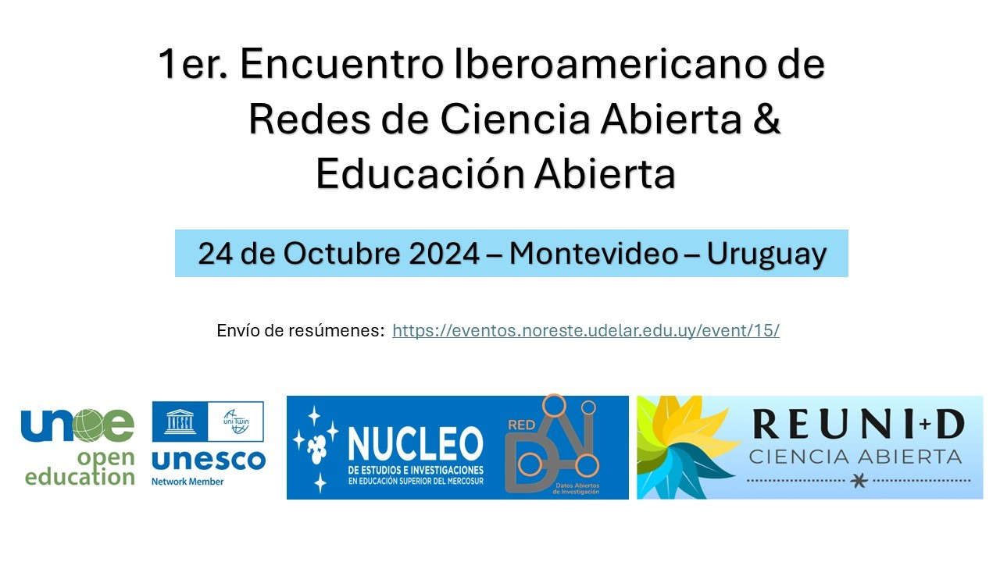
- Como foi
- Sessões individuais por videoconferência, como numa entrevista de referência, com grafos de coocorrência de palavras-chave da Scopus
- O que mostrou
- A visualização semântica atua como andaime cognitivo
- O limite
- A condução síncrona e braçal pelo pesquisador apontou a necessidade de automação
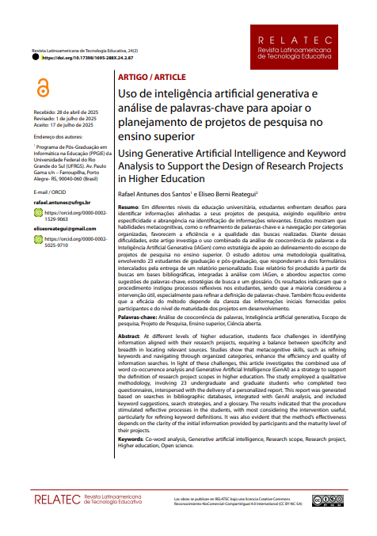
- Como foi
- Fluxo remoto e assíncrono, com formulários e um relatório de feedback gerado por IA generativa
- O que mostrou
- A combinação ampliou o repertório conceitual e a segurança na escolha das palavras-chave
- O limite
- A eficácia dependia da qualidade das informações iniciais e da maturidade do projeto
- Como foi
- Uso autônomo e integral da plataforma, por estudantes de disciplinas de metodologia da pesquisa
- O que avaliou
- A autoeficácia, a aceitação e a experiência de uso, com instrumentos de Bandura, do TAM3 e da UTAUT
- A seguir
- A arquitetura do sistema e o desenho do estudo final
Cada ciclo revelou o limite que motivou o seguinte, até o sistema autônomo avaliado no estudo final.
O Delinéia articula uma trilha de aprendizagem a um motor bibliométrico e generativo
Trilha de aprendizagem · o que o estudante percorre
Formulário inicial
Grafo de tópicos
Seleção de tópicos
Relatório de delineamento
Avaliação
Diagramas da tese


OpenAlex
- até 500 artigos por busca
- Domain › Field › Subfield › Topic
- tópicos com score ≥ 0,35
Coocorrência
- grafo em NetworkX
- 9 nós por centralidade de grau (Miller, 7±2)
- mapa temático por clusters
Gemini 2.5 Pro
- avaliação, glossário e chaves de busca
- temperatura 1,2 · 8.192 tokens
- três tentativas em caso de falha
Google Sheets
- respostas dos formulários F1 e F2
- dados da pesquisa e histórico
Interface em Streamlit 1.52, hospedada no HuggingFace Spaces, com código aberto no GitHub
O estudo final aconteceu inteiro dentro do Delinéia, da anuência à avaliação
Convite e anuência
- 86 estudantes de graduação e pós-graduação, por conveniência
- convite pelas disciplinas de metodologia da pesquisa
- TCLE na própria plataforma
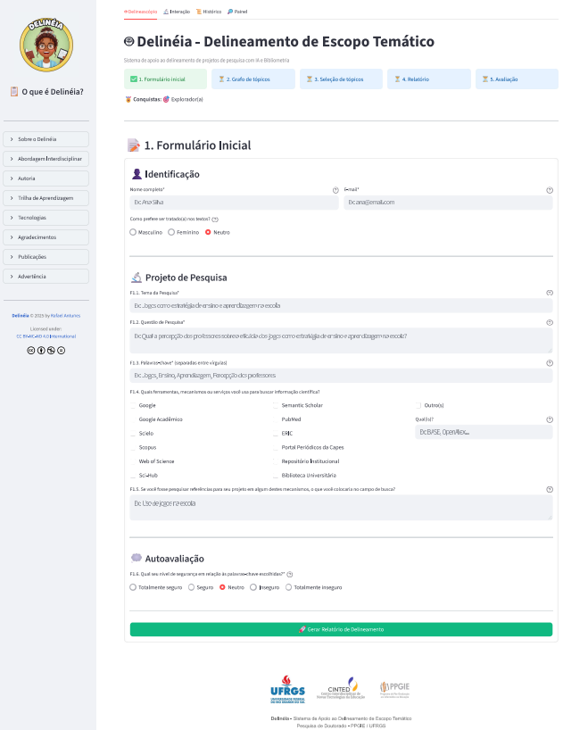
Formulário inicial
- F1.1–1.3tema, questão e palavras-chave
- F1.4–1.5fontes de busca e uma busca espontânea
- F1.6segurança inicial
Trilha no Delinéia
- grafo de coocorrência e seleção de tópicos
- relatório de delineamento em PDF
- orquestração feita pela aplicação, sem o pesquisador
Formulário de avaliação
- F2.1–2.20afirmativas do TAM3 e da UTAUT
- F2.21–2.25NPS e quatro questões abertas
- F2.26segurança final
Cada conjunto de dados recebeu um tratamento próprio, alinhado aos objetivos
Segurança declarada
F1.6 e F2.26 · escala Likert de cinco pontos
Comparação pareada antes e depois, com matriz de transição entre os níveis, sobre os 86 estudantes que concluíram a trilha
Aceitação e recomendação
F2.1 a F2.20 · concordância · F2.21 · NPS
Distribuição das respostas em seis construtos, seguida do índice de recomendação
Venkatesh et al., 2003; Venkatesh; Bala, 2008; Reichheld, 2003
Comentários abertos
F2.22 a F2.25 · 50 dos 86 participantes comentaram
Análise de conteúdo: codificação dos núcleos de sentido, categorias a posteriori e interpretação qualitativa
Saldaña, 2015; Bardin, 2011; Bauer; Gaskell, 2010
Metadados das buscas
palavras-chave de autor na Scopus · tópicos hierárquicos no OpenAlex
Comparação entre os ciclos: granularidade e padronização dos termos, e seus efeitos nas sugestões da IA
A trilha começa quando o estudante descreve o seu projeto no formulário inicial
Neste vídeo
- Apresentaçãoa barra lateral, com o sistema, a trilha e as tecnologias
- AbasDelineascópio, Interação, Histórico e Painel
- Formulário inicialtema, questão, palavras-chave, fontes de busca e segurança
- Processamentoo pedido do relatório e o aviso de espera
O grafo mostra o campo, e a seleção devolve a decisão ao estudante
Neste vídeo
- Grafo de tópicosa rede do OpenAlex, reduzida aos 9 tópicos mais centrais
- Glossáriocada tópico explicado no contexto do projeto
- Seleção de tópicoso estudante escolhe os tópicos que delimitam o escopo
O relatório organiza o feedback em sete partes, que acompanham a trilha do estudante
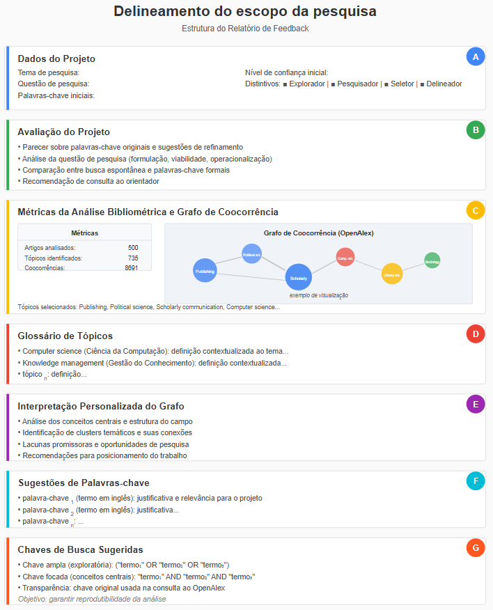
Figura 16
O que o estudante trouxe e o que o campo mostra
A leitura do campo
Ferramentas para seguir sozinho
O relatório devolve ao estudante a leitura do campo e as ferramentas para buscar sozinho
Neste vídeo
- A e B · Dados e avaliaçãoo projeto declarado e o parecer sobre ele
- E · Interpretação do grafoclusters, conexões e lacunas
- C · Grafo de coocorrênciaos 9 tópicos centrais
- F · Palavras-chavesugestões com justificativa
- G · Chaves de buscaampla, focada e a original, e o PDF
A avaliação fecha a trilha com a segurança final e o distintivo de Avaliador(a)
Neste vídeo
- ConsentimentoTCLE para os dados e para convites futuros
- Aceitação e recomendaçãoTAM3, UTAUT, NPS e comentários
- Segurança finalao lado da resposta inicial
- Perfil e enviodados opcionais do respondente
- Conquistasos cinco distintivos e a música de recompensa
- Novo delineamentoa trilha recomeça
Mais ferramentas de busca não trouxeram mais segurança aos estudantes
Quem participou
sem nenhuma experiência prévia com bibliometria
em dourado, os 4 com experiência básica ou intermediária, todos da Ciência da Informação
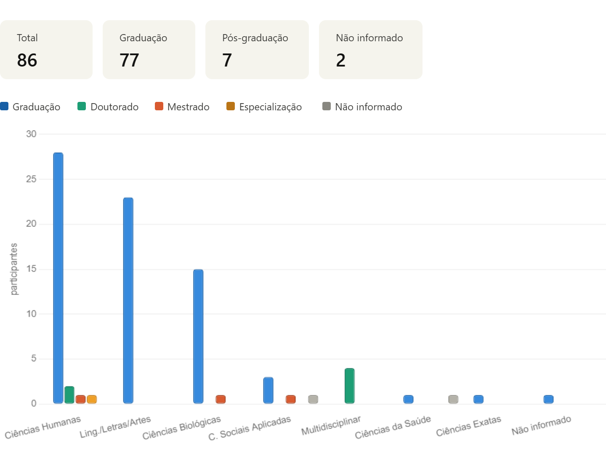
Onde buscavam
menções entre 314, em 96 formulários iniciais, com média de 3,6 fontes por formulário
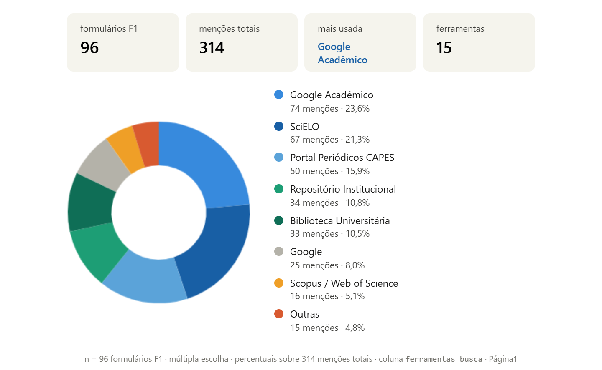
A ilusão da ferramenta
de correlação entre o número de fontes usadas e a segurança declarada
Os 3 respondentes totalmente inseguros usavam, em média, 5,3 fontes, mais do que qualquer outro grupo.
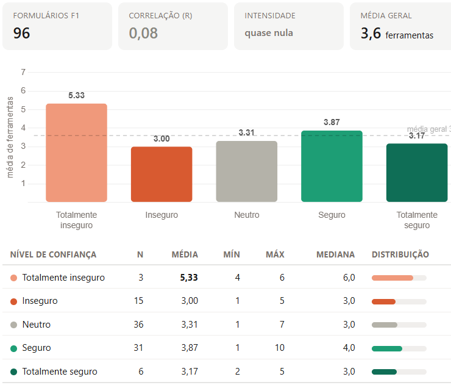
A segurança subiu para a maioria, e os poucos recuos revelam calibração do julgamento
Segurança na escolha das palavras-chave, antes e depois do relatório (n = 86)
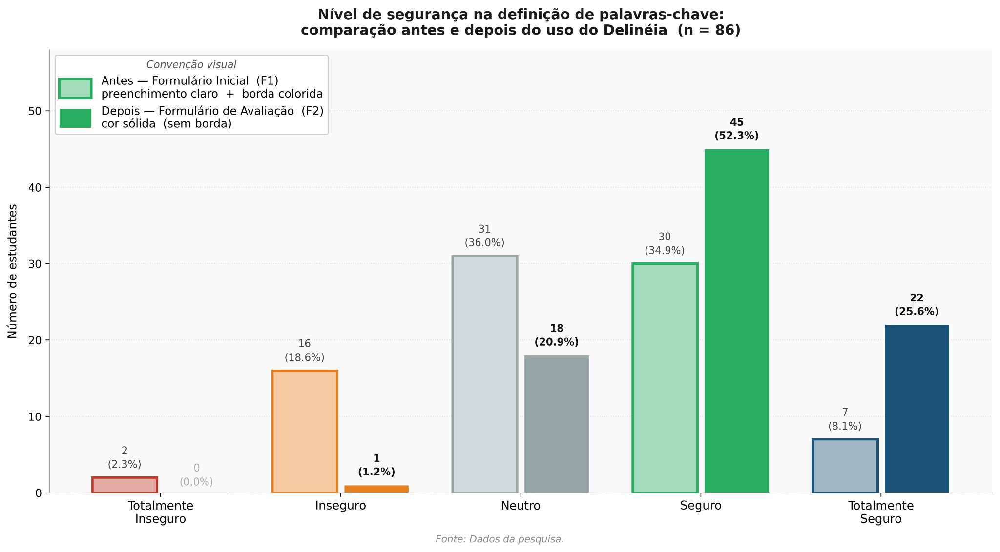
Os 9 recuos
- 6de seguro para neutro
- 2de totalmente seguro para neutro
- 1de totalmente seguro para seguro
Todos partiram de quem se dizia seguro, e ninguém caiu para a insegurança. O relatório tornou visíveis limites antes ignorados.
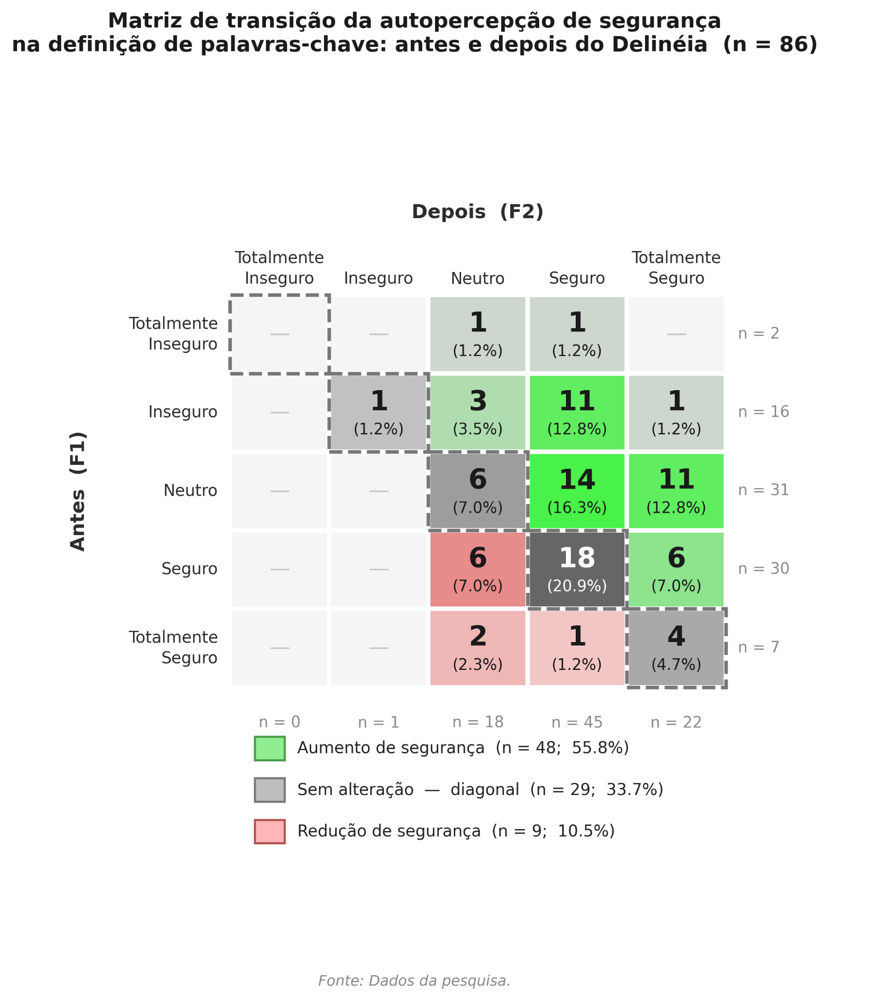
Os estudantes aprovaram o Delinéia, mas preferiram não delegar a ele as próprias decisões
Concordância positiva em cada afirmativa (concordo e concordo totalmente, n = 86)
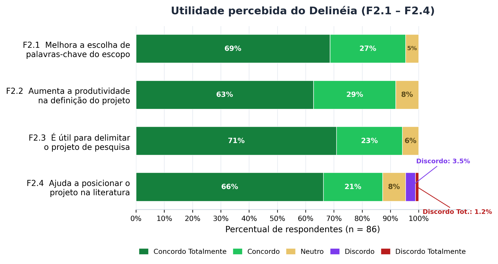
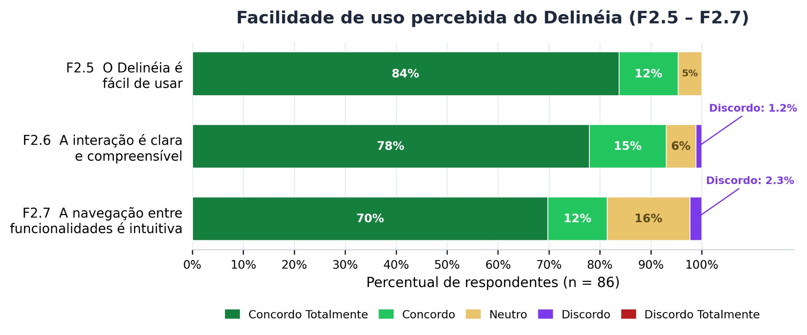
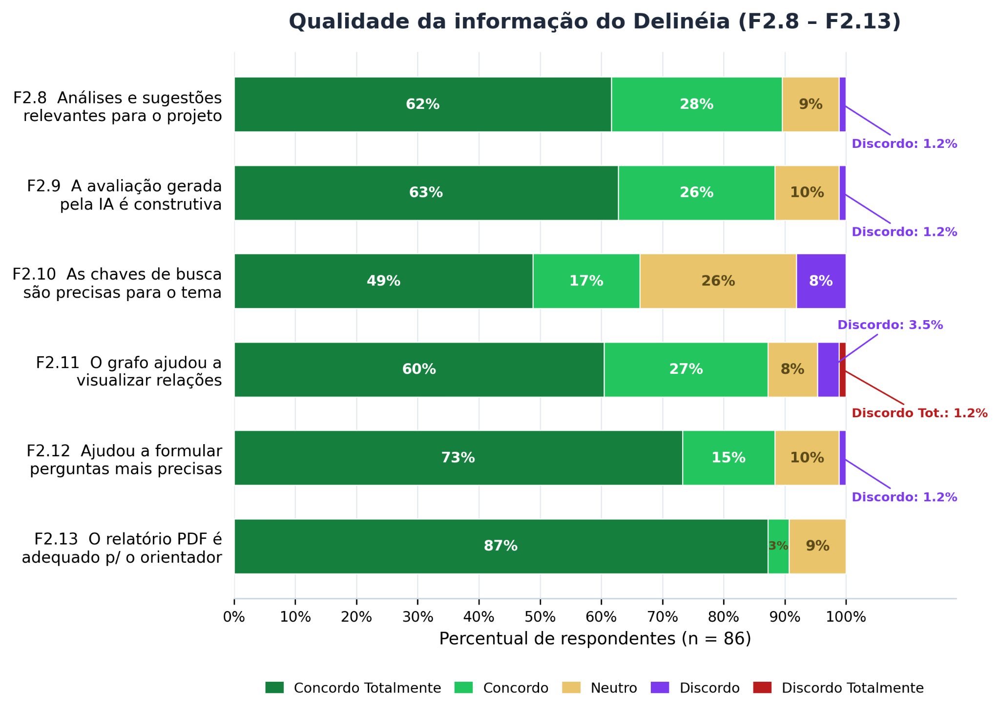
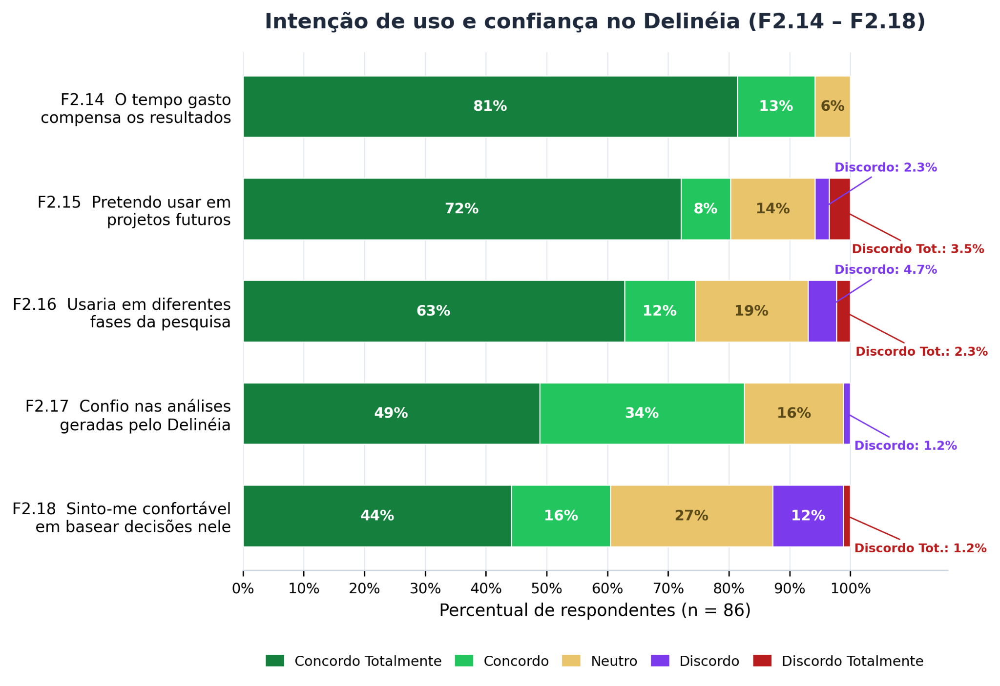
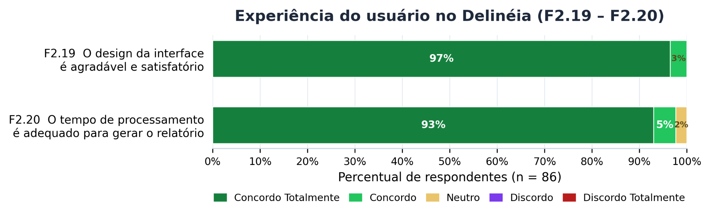
Confiam nas análises 82,6%, mas apenas 60,5% se sentem confortáveis em basear decisões nelas.
Recomendação · Net Promoter Score
numa escala de −100 a 100
- 57promotores (66,3%)
- 26neutros (30,2%)
- 3detratores (3,5%)
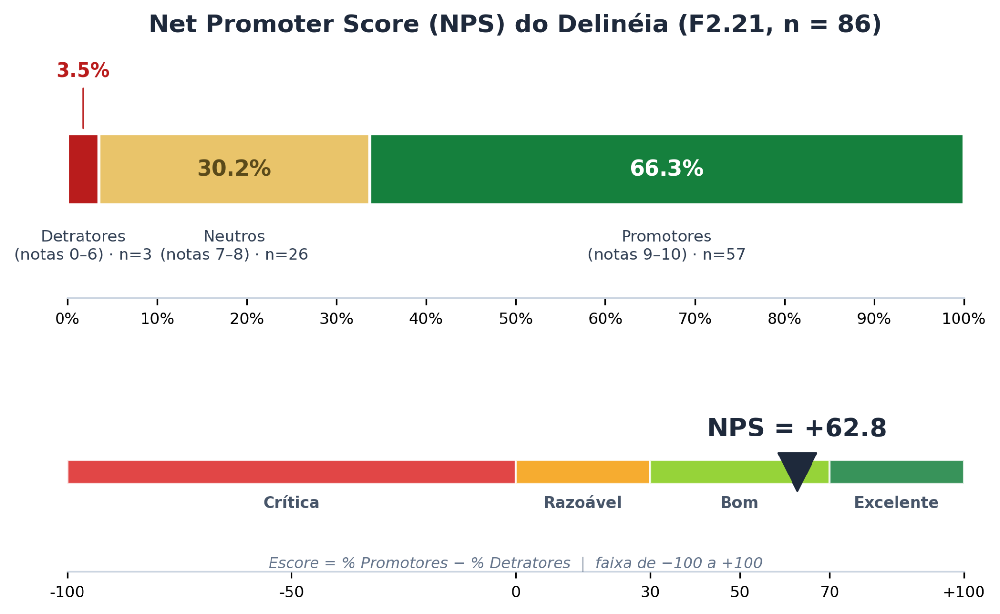
Nos comentários, o relatório reorienta o escopo e se torna ponte para a conversa com o orientador
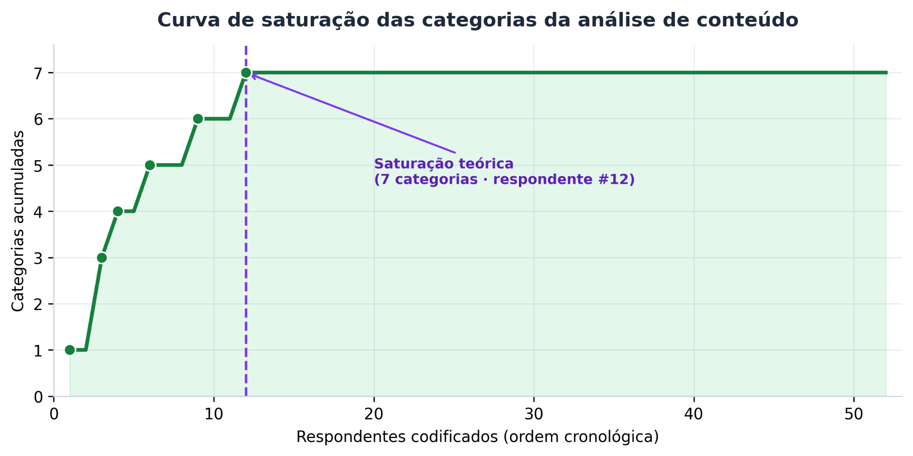
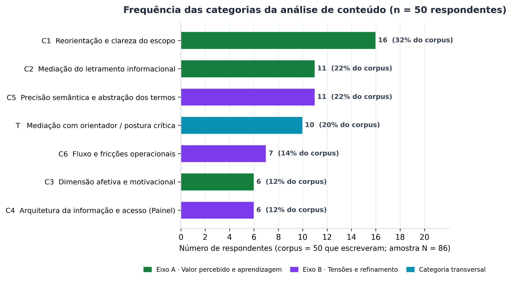
Valor
Tensão
Transversal
“Percebi que minha pergunta estava ampla para um estudo só.”
user_adb8e0cf · C1“Parece que meu TCC é da Psicologia.”
user_649167a2 · C5“Criou uma casca para minha negociação com ele.”
user_d3b4e6c4 · T, sobre o orientadorCom o OpenAlex, o estudante deixou de receber sinônimos e passou a receber um mapa do campo
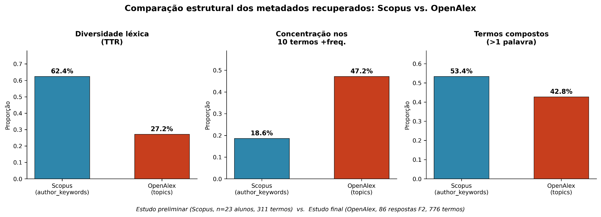
23 alunos · 311 termos OpenAlextópicos hierárquicos
86 registros · 776 termos
O mesmo tema nos dois estudosgamificação e ensino
o jargão exato do tema
as grandes ciências a que ele pertence
O que a mudança provocou
Diante de tópicos amplos, o estudante passou a filtrar, a decidir o que era genérico demais e a justificar os próprios recortes.
- Explica a nota mais baixa, F2.10, sobre a precisão das chaves
- Explica a categoria C5, sobre a abstração dos termos
- A Scopus parecia precisa, mas entregava sinônimos do que o aluno já sabia
Coocorrência e IA generativa reconfiguraram o comportamento informacional dos estudantes
“A adoção de uma taxonomia hierárquica […] inseriu uma fricção produtiva no fluxo de interação, demandando do aluno a autorregulação contínua e a tomada de decisão consciente.”
seção 7.1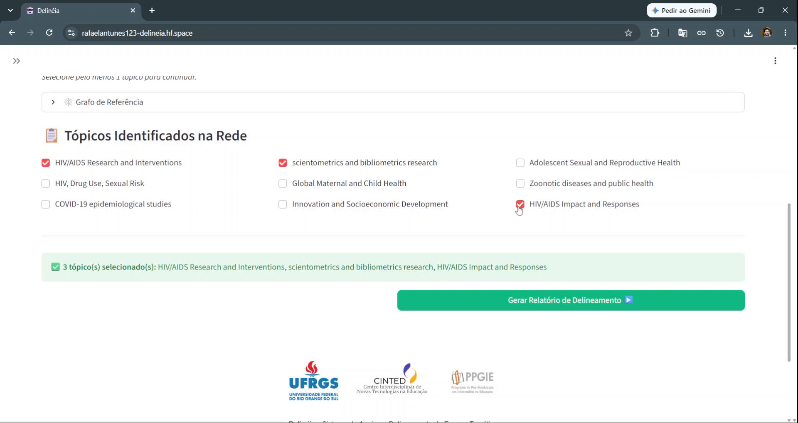
“A ferramenta operou como um andaime metacognitivo, fornecendo as estruturas de apoio para que os estudantes transitassem da ansiedade […] para uma delimitação metódica e segura.”
seção 7.2“A usabilidade traduziu-se na ocorrência do engajamento absorto e do estado de fluxo, atenuando a ansiedade e justificando o tempo de processamento.”
seção 7.3“Esse atrito cognitivo favoreceu a autonomia investigativa e consolidou a agência epistêmica simbiótica.”
seção 7.4“Esse documento instrumentou o discente para a negociação metodológica com o seu orientador, preservando a autoridade da supervisão humana.”
seção 7.5Um parceiro de pensamento provisório
Vendrell; Johnston, 2026 · seção 7.7Diálogo com o estado da arte
Convergências
Sentido acadêmico estruturado de forma transparente para iniciantes
Bases abertas a serviço da democratização bibliométrica
IA ancorada em evidências da literatura
Tensões
Diante da aceleração e da delegação, a fricção deliberada
A tensão da amplitude na representação do conhecimento
A perguntaDe que maneira a avaliação automatizada das definições preliminares de um projeto afeta a autoeficácia dos estudantes no delineamento de suas propostas de investigação?
Atuando como um andaime metacognitivo dinâmico, que converte a opacidade da busca exploratória em um processo visual, inteligível e epistemologicamente gerenciável.
Sem automatizar o pensamento, por três vias
A tese une Informática na Educação e Ciência da Informação em um artefato aberto e validado
Informática
Um pipeline em sete etapas, do OpenAlex à rede de coocorrência e à mediação por LLM
Uma interface calibrada pelo limite da memória de trabalho
Integração por API, grafos abertos e relatórios em PDF
Miller, 1956; Aria et al., 2024; Lai et al., 2025
Educação
Uma trilha de aprendizagem que atua como andaime metacognitivo
Experiências de domínio nas decisões de recorte e seleção
O feedback da IA como persuasão verbal estruturada
Bandura, 1986; 1997
Ciência da Informação
A bibliometria levada ao microcontexto do pesquisador iniciante
A coocorrência e o conteúdo semântico, onde a RSL encontrou a lacuna
Kuhlthau e Wilson relidos na era da IA generativa, com a ilusão da ferramenta
Callon et al., 1983; Kuhlthau, 1991; Wilson, 2000
Um artefato aberto e validado empiricamente, com um arcabouço teórico-prático para que o estudante transite da incerteza exploratória à construção autônoma do saber científico.
A tese abre seis caminhos para a investigação futura
O que permitiria avançar · 1 de 6
Ver a fricção produtiva acontecer: como o estudante hesita, decide e reformula diante do grafo.
O que permitiria avançar · 2 de 6
Saber se o andaime serve também a quem já domina o vocabulário da própria área.
O que permitiria avançar · 3 de 6
Isolar o efeito do feedback automatizado e distingui-lo da própria reflexão do estudante.
O que permitiria avançar · 4 de 6
Confrontar a segurança declarada com a qualidade real das chaves e dos projetos.
O que permitiria avançar · 5 de 6
Tornar o Delinéia gratuito, auditável e reprodutível em qualquer instituição.
O que permitiria avançar · 6 de 6
Verificar se o escopo delineado sobrevive à escrita do projeto e se a autoeficácia se mantém.
A melhor tecnologia educacional não é aquela que reduz ao máximo o esforço cognitivo, mas a que dosa a fricção exata para que a aprendizagem aconteça.
Capítulo 11
Em 1552o delineamento era o esboço para reparar um navio e prepará-lo para a travessia. Nesta tese, tornou-se o esboço para reparar a confiança do estudante-pesquisador.
Ciência aberta
https://rafaelantunes123-delineia.hf.space
https://github.com/rderafa-rgb/Delineia
“É com esse convite à travessia, e não com a pretensão de tê-la concluído, que se encerra este trabalho.”
Obrigado
- Ao Prof. Dr. Eliseo Berni Reateguipela orientação
- À bancapela leitura atenta
- Ao GTech.Edu/UFRGSaprendi a ter responsabilidade
- Aos colegas e professores do PPGIEaprendi a aprender
- À minha famíliaaprendi a sentir saudade
- À CAPES, pela bolsaaprendi a estudar e ser pago para isto
Delinéia · Interação, Histórico e Painel
O presente trabalho foi realizado com apoio da Coordenação de Aperfeiçoamento de Pessoal de Nível Superior - Brasil (CAPES) – Código de Financiamento 001.